Shor's Error Correction Code
So far, we know how to independently detect and correct bit-flip errors and phase-flip errors. We saw that the circuit for detecting bit-flip errors is blind to phase errors, and vice versa. We want to be able to simultaneously detect and correct both types of errors. To do this, we concatenate both error-detection schemes into a single unified circuit. This is known as Shor's code.
Encoding Circuit for Shor's Code
The first step in any error correction protocol is to encode the qubit you are trying to protect using multiple physical qubits. For Shor's code, the encoding circuit is built by concatenating two simpler error-correction schemes.
Starting with the qubit we want to protect, we first apply the encoding circuit for detecting phase errors using three physical qubits. We then apply the encoding circuit for detecting bit-flip errors independently to each of those three qubits, expanding each one into a block of three. The result is a total of 9 physical qubits encoding a single logical qubit, as shown below:
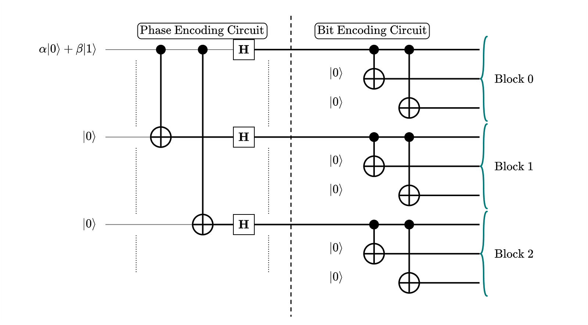
This 9-qubit structure is naturally thought of as three blocks of three qubits each: Block 0, Block 1, and Block 2. The encoding maps the logical basis states as follows:
\begin{align} |0\rangle &\mapsto \frac{1}{2\sqrt{2}} \big(|000\rangle + |111\rangle\big) \otimes \big(|000\rangle + |111\rangle\big) \otimes \big(|000\rangle + |111\rangle\big) \\[4pt] |1\rangle &\mapsto \frac{1}{2\sqrt{2}} \big(|000\rangle - |111\rangle\big) \otimes \big(|000\rangle - |111\rangle\big) \otimes \big(|000\rangle - |111\rangle\big) \end{align}Useful Gate Identities
Before discussing error detection, it is helpful to establish some identities relating \(X\) and \(Z\) gates to the CNOT gate. These identities allow us to track how \(Z\) errors propagate through the encoding circuit and are essential tools for analysing phase-error detection in Shor's code.
The images below give the gate identities between the \(X\) gate and the CNOT gate:
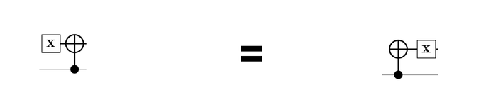
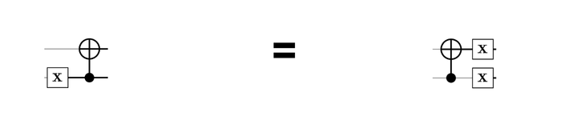
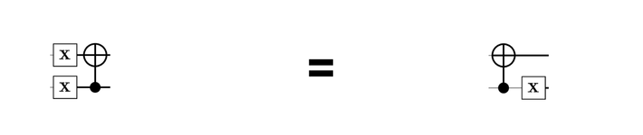
For \(Z\) gates and CNOT, the same relationships hold, but with the roles of the control and target qubits swapped:
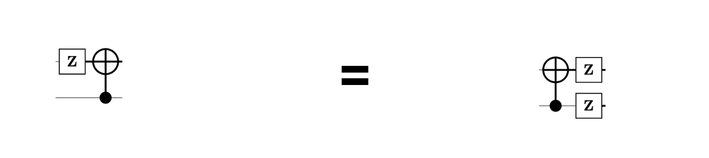
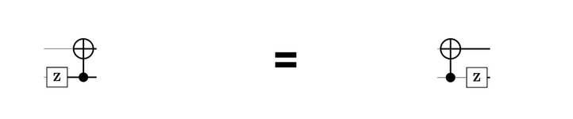
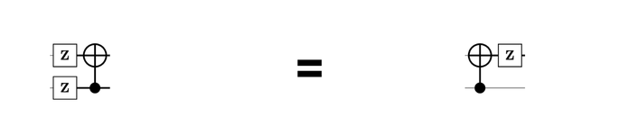
Each identity can be verified by carrying out the relevant matrix multiplications.
Detecting Bit-Flip Errors
Detecting bit-flip (\(X\)) errors in Shor's code is straightforward. We treat each of the three blocks separately and, within each block, apply a parity-checking circuit to ask: which qubit is different from the other two? This identifies any single-bit flip error within the block and tells us exactly which qubit to correct. The procedure can detect and correct up to one \(X\) error per block.
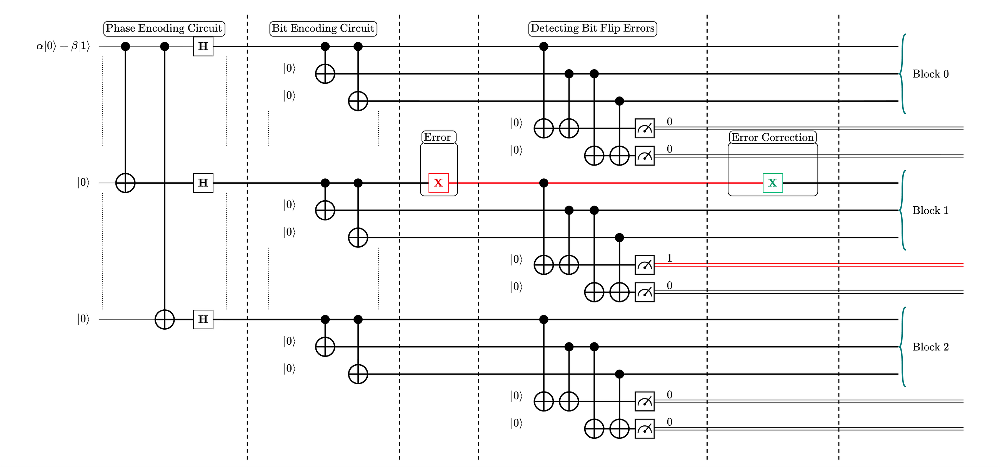
In the circuit above, a bit-flip error occurs on the first qubit in the middle block. The parity-checking circuits for the first and third blocks return a syndrome of 00, indicating no errors. For the middle block, the syndrome is 10, indicating a flip on the first qubit. We correct this by applying an \(X\) gate to that qubit.
Note that detecting bit-flip errors requires 6 extra ancilla qubits to extract the syndrome.
Detecting Phase Errors
Detecting phase-flip (\(Z\)) errors is more subtle. Consider a \(Z\) error occurring on the bottom qubit in the middle block:
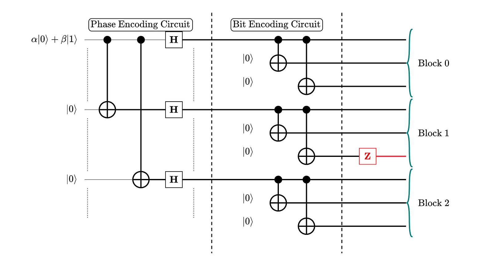
Using the gate identities from the previous section, we can commute this \(Z\) error through the CNOT gates. Recall that for \(Z\) gates, a \(Z\) error on a target qubit propagates backwards through the CNOT to the control qubit. Within each block, the bit-encoding circuit is structured so that the lead qubit acts as the control for both other CNOTs in the block. This means that no matter which qubit in the block the \(Z\) error originates on, commuting it backwards through the chain always terminates at the lead qubit:
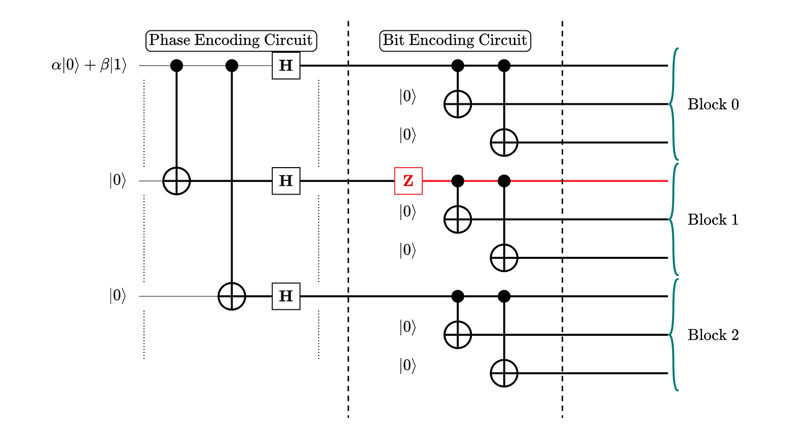
A \(Z\) error on any qubit within a block has the same net effect as a \(Z\) error on the lead qubit of that block.
We cannot determine which qubit within a block experienced the phase flip — only which block was affected. The procedure for phase-error detection is:
- Decode the bit-flip encoding for all three blocks.
- Apply the phase-error parity-checking circuit across the three lead qubits.
- Read the syndrome to determine which block, if any, has experienced a phase flip.
- Correct by applying \(Z\) to any qubit in the affected block.
- Re-encode the bit-flip encoding to return to the full 9-qubit Shor code. Re-encoding is necessary because the decoding step temporarily strips away the bit-flip protection, leaving the qubits vulnerable until the next correction cycle begins.
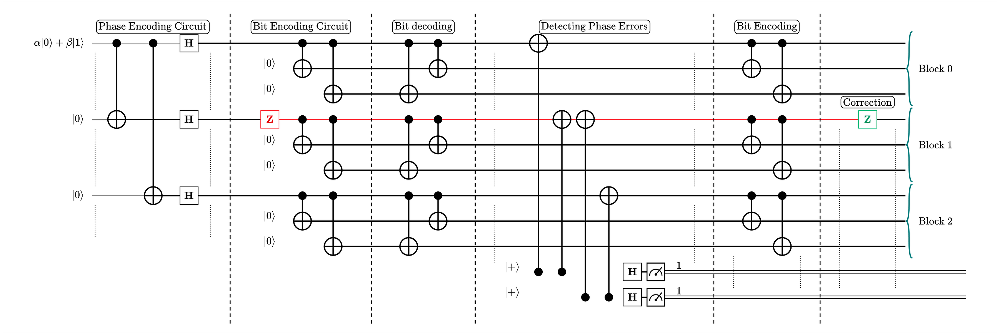
Notice that detecting phase errors requires only 2 ancilla qubits, since we are checking parity across three lead qubits rather than within each block independently.
Detecting Both Bit and Phase Errors Simultaneously
What if a qubit experiences both a bit-flip and a phase-flip error at the same time? It turns out no additional machinery is required. Because \(X\) and \(Z\) anticommute:
\[ XZ = -ZX \]A combined \(XZ\) error is equivalent to \(ZX\) up to a global phase of \(-1\). Since global phases are physically unobservable, we can treat the \(X\) and \(Z\) components independently, in either order:
- Detect and correct the bit-flip component using the parity-checking circuit for \(X\) errors.
- Decode the bit-flip encoding, apply the phase-flip parity-checking circuit, correct any \(Z\) error, and re-encode.
The order can be reversed because the entire gate sequence for phase-error detection — the bit-flip decoding circuit together with the modified parity-checking circuit — is composed entirely of Hadamard and CNOT gates. Since \(X\) commutes with both \(H\) and CNOT, an \(X\) error produces the same syndrome regardless of whether it occurs before or after those gates. The two corrections are therefore completely independent.
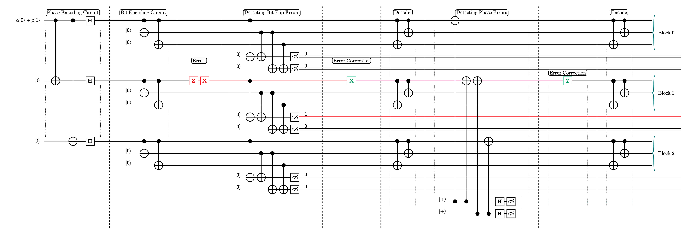
In the circuit above, both errors occur on the first qubit in the middle block. The \(X\)-error syndrome is 10, so we apply an \(X\) gate to correct the bit flip. The \(Z\)-error syndrome is then 11, indicating a phase flip in the middle block, which we correct with a \(Z\) gate before re-encoding.
This process can be repeated continuously as time progresses. Shor's code will correctly identify and fix errors provided that at most one bit-flip error occurs per block and at most one phase error affects any one block.
When Does Shor's Code Actually Help?
Shor's code uses 9 physical qubits. Assuming each qubit independently experiences an error with probability \(p\), the code fails when two or more qubits are affected. The logical failure probability is:
\[ P_2 = 1 - (1-p)^9 - 9p(1-p)^8 \]The first term accounts for the probability that all 9 qubits are error-free, and the second for the probability that exactly one qubit is affected — the only two cases Shor's code can handle. Everything else is a logical failure.
Shor's code only helps when \(P_2 < p\), i.e. when it produces fewer logical errors than an unencoded qubit would. Setting \(P_2 = p\) and solving numerically gives a crossover at \(p \approx 0.0323\):
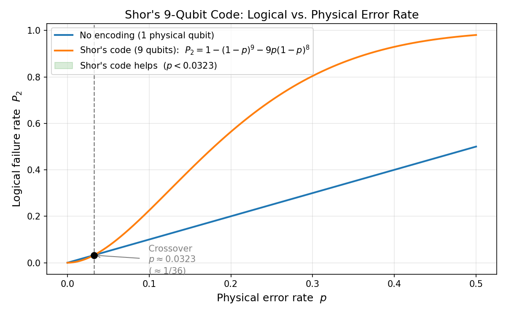
Below this threshold, the redundancy reduces the logical error rate. Above it, the additional qubits introduce more opportunities for error than the redundancy can fix. This is a fundamental constraint: error correction requires that the underlying hardware already be reliable.
Next, we will find out that correcting for bit and phase errors alone is sufficient to correct any arbitrary single-qubit error.